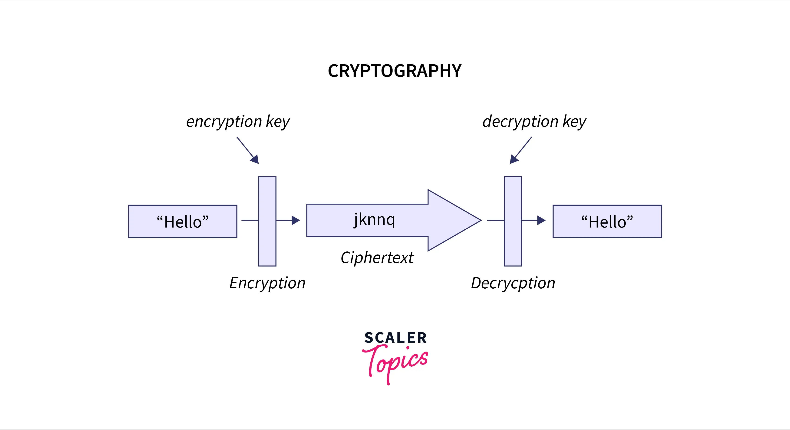

OSI / TCP/IP
-
A computer network is a set of devices (computers) connected to exchange information and resources such as files etc. The main goals of computer networks are:
- Resource sharing (such as software sharing, program sharing, etc.)
- High Reliability (if one network link fails another can transfer the data).
- Cost Reduction (we can buy only required services from cloud services like GCloud, AWS, Azure, etc.).
- Communication (acts as a communication medium between sender and receiver).
- Load Sharing (a program may run on multiple machines).
-
The Internet operates on a technique called packet switching. In packet switching, the data that is transferred among the different computers on the internet are transmitted in the form of packets. These packets contain information about the error control mechanisms, the address of the destination, and also the sequence in which the packets are to be transmitted.
-
The web has got upgraded from WEB 1.0 (on which, there is only single- side communication between two computers) to WEB 2.0 (which allows two-way communication between two computers). WEB 3.0 majorly focuses on the data of the users. It lays emphasis on decentralized applications based on blockchain technology aided with the power of AI and Machine Learning.
-
In circuit switching, a dedicated communication channel is set up between the sender and the receiver. Due to the dedicated circuit, there is extremely little chance of data loss or error but a lot of bandwidth is lost because other senders cannot utilize the same channel when a transmission is going on.
-
In message switching, end-users communicate by sending and receiving messages that included the entire data to be shared. Messages are the smallest individual unit. There are a number of intermediate nodes that transfer data and ensure that the message reaches its destination. Message switched data networks are hence called hop-by-hop systems.
-
In packet switching, the message is first divided into data packets and then transmitted. It is connectionless, as it doesn't require a dedicated communication channel. These data packets are then grouped at the receiver's end to obtain the actual data or message. It is not preferred for transmissions with constant usage, such as voice calls.
-
The OSI model is a 7-layered model,and the basic idea behind layered architecture is to divide the design into smaller pieces. Most networks are organized in a series of layers to reduce the design complexity. The layered architecture also provides abstraction from other layers.
-
The lower layer is responsible for all the data transfer issues and is also known as the Hardware Layer. It consists of Physical Layer, Data Link Layer and Network Layer.
-
The upper layer is responsible for all the application-related issues and is also known as Software Layer. It includes Application Layer, Presentation Layer, Session Layer, Transport Layer.
-
There are 7 layers in a OSI model:
(7) Application Layer
It defines protocols which enable applications to communicate with other applications over the Internet. For eg: HTTP/S, SMTP, RDP are application layer protocols.
(6) Presentation Layer
It performs three main tasks. Translation which converts ASCII/Unicode to binary form, Data Compression which is used to compress data for faster transmission and Encryption to secure data from unauthorized access.
(5) Session Layer
It is mainly responsible for Authentication and Authorization. It is used for establishing, managing and terminating sessions. For eg: When we log into our account on a website, perform a task and then logout. All of this is managed by the session layer.
(4) Transport Layer
It performs three main tasks. Segmentation which breaks data into smaller segments depending on the protocol used. Flow Control which is responsible for managing the speed of flow of data between devices. Error Control which is used for check for errors in data through checksum bits and send automatic repeat requests for missing or corrupted data. TCP, UDP protocols.
(3) Network Layer
It performs the following tasks: It generates Packets which contain the segments plus additional information like source, destination IP, Ports etc.
Logical Addressing to provide IP addresses to devices on the network. It also generates a Routing Mask to mask devices on a subnet. Lastly it used for Path Determination to identify optimal path to reach the destination.
(2) Data Link Layer
As the name suggests it links the digital data to the physical hardware. It is used for Media Access Control to ensure collision free transmission of data. It generates a Frame which is the form of stream of bits combined with the MAC Address of source and destination NIC along with error-detection.
(1) Physical Layer
This layer is for transmission of data from one device to another in a computer network. The bitstream is encoded into signals before it can be transmitted. These signals can be either Analog Signals or Digital Signals.
For Eg: Copper Cables use electrical signals whereas Fiber uses laser signals -
Types of networks based on their scale:
(i) PAN: Personal Area Network
(ii) LAN: Local Area Network
(iii) WLAN: Wireless Local Area Network
(iv) CAN: Campus Area Network
(v) MAN: Metropolitan Area Network
(vi) WAN: Wide Area Network
(vii) SAN: Storage Area Network -
While the OSI model is a reference/logical model, the TCP/IP is a simpler and practical version of the OSI model, which is used to design networks in real environments. Unlike OSI model it consists of only four layer:
(4) Application Layer
(3) Transport Layer
(2) Network Layer
(1) Physical Layer -
In networking, the protocol is a set of rules for transmitting data. In networking, the protocol is also referred to as a rule for processing and transmitting data. Computers connected within the network may use different types of software and hardware, but protocols allow them to communicate with each other instead of different software and hardware.
Application Layer
-
Application Layer
An application layer is an abstraction layer that specifies the shared communications protocols and interface methods used by hosts in a communications network. It is the layer closest to the end-user, implying that the application layer and the end-user can interact directly with the software application. The application layer isn't an application. Instead, it's a component within an application that manages how data is sent to and received from other devices.
Domain Name System (DNS), Simple Mail Transfer Protocol (SMTP), File Transfer Protocol (FTP), Trivial File Transfer Protocol (TFTP), and TELNET are some of the protocols used in the application layer.
(i) The application layer guarantees that the receiver is recognized, accessible, and ready to receive data from the sender.
(ii) It enables authentication for an added layer of network security.
(iii) It determines the protocol and data syntax rules at the application level.
(iv) The protocols of the application layer also define the basic syntax of the message being forwarded or retrieved.
(v) It also checks whether the sender's computer has the necessary communication interfaces, such as an Ethernet or Wi-Fi interface.
(vi) Finally, the data on the receiving end is presented to the user application. -
There are mainly two types of computer network architecture:
(i) Peer-to-Peer (P2P)
Peer-to-peer has decentralized the simplest form of network architecture where every computer system (node) can communicate with every other computer system (node). In the peer-to-peer network architecture, there is no use of a centralized server. Also, each node of the network has equal permission and responsibility for processing the data or information. So, we can say that in a peer-to-peer network, each computer system can act as both a server and as well as a client.
(ii) Client-Server
A client is a computer system that accesses the services provided by a server. On the other hand, a server is a powerful centralized hub that stores various information and handles the requests of the client(s). In the client-server network, the files are not stored on the hard drive of each computer system. Instead, the files are centrally stored and backed up on a specialized computer known as a server. Here, a server is designed to efficiently provide data to a remote client. On a large-scale network, there can be more than one server.
-
The Domain Name System (DNS) is a method for mapping alphabetic names to numeric IP addresses on the Internet, similar to how a phone book maps a person's name to a phone number. A DNS query is made when a web address (URL) is typed into a browser to obtain the IP address of a web server associated with that name. The DNS directory is distributed worldwide to account for the millions of domain names listed and accessed daily.
The resolution process of the DNS can either be iterative or *recursive:
(i) Recursive DNS Service: In this type, if the DNS resolver only communicates to the root servers and the remaining servers were communicated recursively by the root server. The root server sends the output (IP in this case) to the DNS resolver.
(ii) Iterative DNS Service: In this type, the DNS resolver can directly communicate and receive input from the servers at different levels.
-
The DNS consists of different types of servers:
(i) DNS Resolver: An application, such as a web browser, sends DNS queries to the recursive server. It's the user's first resource, and it either provides the response to the query if it has it cached, or it goes to the next-level server if it doesn't. Before answering the client, this server may undergo multiple iterations of querying.
(ii) Root Name Server: If the recursive server does not have the answer cached, it first sends a query to this server. The root name server is a directory of all the servers that will hold the requested information.
(iii) Top-Level Domain Server: A TLD nameserver keeps track of all domain names with the same domain extension, such as .com, .net, or whatever comes after the last dot in a URL.
(iv) Authoritative name server: The server contains information specific to the domain name it serves (e.g., scaler.com). If the authoritative name server has access to the requested record, it will return the requested hostname's IP address to the DNS Recursor (the librarian) who initiated the request. -
Three different types of DNS Queries:
(i) Recursive Query: A DNS client expects a DNS server (usually a DNS resolver) to respond to a recursive query with either the requested resource record or an error message if the resolver is unable to locate it.
(i) Iterative Query: It occurs between the DNS resolver and the nonlocal name servers, like the root, TLD, and authoritative name servers. The root server refers to the recursive server to the TLD, which directs it to an authoritative server. If the authoritative server has the domain name, it passes it on to the recursive server.
(i) Non-Recursive Query: This usually happens when a DNS resolver client requests a record from a DNS server that it has access to, either because it is authorized for the record or because the record is in its cache. -
A Record stands for address and holds the IP address of a domain. Ns record stands for name server records that specify which authoritative server is responsible for maintaining all information for a specific domain.TXT records enable administrators to enter text into DNS. When there is an alias, canonical name records are utilized instead of an A record.
-
DNS caching aims to shorten the time it takes to receive a response to a DNS query. Caching allows DNS to save past answers to requests closer to clients, allowing them to obtain the same information faster the next time they query it. Caching improves efficiency by allowing servers to react quickly when receiving a request for the same IP address.
-
The World Wide Web popularly known as WWW, W3, or the Web is an interconnected system of public webpages accessible through the Internet. The Web is not the same as the Internet : the Web is one of many applications built on top of the Internet.
-
Protocols in the Application Layer help in building models for users to interact with software applications over the World Wide Web. It contains formatting rules specifying how data is packaged when the messages are sent and received. There are several protocols in the application layer used for different services like email services, file transfers, etc.
Some commonly used application layer protocols are:
(i) DNS: It is used for an effective translation of internet domain names into internet protocol addresses. Port 53.
(ii) TELNET: It is used for communication through the command line interface between remote devices or servers. Port 23.
(iii) FTP: It models a protocol to download, upload, and transfer files between two devices over the internet. Port 20 for data and 21 for control.
(iv) TFTP: A concise version of FTP, it provides a lightweight file transfer mechanism. Port 69.
(v) NFS: It provides a model to share files remotely between servers over a network. Port 2049.
(vii) LPD: It is a protocol defined for print servers between UNIX systems and remote printers. Port 515.
(viii) X Window: It is a network protocol providing GUI (Graphical User Interface) for networks in interconnected mainframes. Port 6000.
(ix) SMTP: The SMTP protocol builds a communication network between two email servers. Port 25. -
In order to fetch the webpage corresponding to a given IP address, the browser sends a request (called as HTTP request) to the web server. An HTTP request consists of 3 parts i.e. a request line, request headers, and request body.
-
After the client/browser sends an HTTP request to the web server, the server responds back to the browser with an HTTP response. This response consists of all the data that is requested by the client in the HTTP request. An HTTP response consists of 3 parts: Response Status Line, Response Headers, Response Body.
-
An HTTP status code is a three-digit code that specifies the status of the HTTP response. Some of the commonly seen HTTP status codes are: 200: OK, 404: Page Not Found, 500: Internal Server Error
-
HTTP does not store the state/information of the client as well as the server and hence, is a stateless protocol. But with the help of cookies, we can make HTTP protocol as a stateful protocol.Since HTTP relies on the TCP (Transmission Control Protocol), it is a connection-oriented protocol. Hence, the connection is established and the data is sent over the connection only after the establishment of the connection.
-
SMTP, which stands for, Simple Mail Transfer Protocol, is an email protocol that is used to send and receive emails over the internet. It is a set of guidelines that are followed to transmit electronic mail over the Internet. The main purpose of the SMTP is to set up communication guidelines between the servers.
Basically, in SMTP the actual transfer of the mail is done through the message transfer agent (MTA). Hence, to send the mail, the system must have the client MTA and similarly, to receive the mail, the system must have the server MTA.
-
The SMTP client sends the commands to the SMTP server and the server responds with some kind of numerical codes. Some popular commands are:
(i) HELO: This command is used for beginning the email-sending process and is used to identify the user and full domain name.
(ii) MAIL: This command is used to initiate the message transfer and identifies the originator of the mail.
(iii) RCPT: This command identifies the recipient of the mail and again the SMTP server responds with the same code.
(iv) DATA: This command triggers the transfer of data between the client and the server.
(v) QUIT: After the email has been sent, the client sends this command to quit the server.
(vi) RSET: To abort or cancel the mail transaction, this command is used. This doesn't close the connection but it does reset everything. -
The FTP protocol helps to transfer files from one computer to another by providing access to directories or folders on remote computers and allows software, data, text file to be transferred between different kinds of computers.
Although transferring files from one system to another is very simple and straightforward, but sometimes it can cause problems. For example, two systems may have different file conventions. Two systems may have different ways to represent text and data. Two systems may have different directory structures. FTP protocol overcomes these problems by establishing two connections between hosts. One connection is used for data transfer, and another connection is used for the control connection.
During an FTP transmission, the computers, servers, or proxy servers communicate using four commands. These are send, get, change directory, and transfer. FTP transfers files in three separate modes: block, stream, and compressed. The stream mode allows FTP to manage information in a string of data without any boundaries between them. The block mode divides the data into blocks, and in the compressed mode, FTP uses an algorithm called the Lempel-Ziv to compress the data.
-
File transfers can be performed in a variety of ways by an FTP server:
(i) Anonymous FTP: Anonymous File Transfer Protocol (FTP) allows remote users to connect to an FTP server without a user ID and password. It is mostly used for downloading freely distributable material.
(ii) Password Protected FTP: It is also a fundamental type of FTP but demands a password and username, although the service may not be encrypted or secure.
(iii) FTP Secure (FTPS): FTPS (File Transfer Protocol Secure) is a File Transfer Protocol modification that supports Transport Layer Security (TLS) and the now-defunct Secure Sockets Layer (SSL).
(iv) FTP over Explicit SSL/TLS (FTPES): FTPES is similar to FTPS, as it explicitly connects to your web hosting account instead of FTP's implicit connection. The difference is primarily in how and when the login information is encrypted.
(v) Secure FTP (SFTP): The Secure File Transfer Protocol (SFTP) is a file protocol that transfers large files over the internet. It is based on the File Transfer Protocol (FTP) and contains Secure Shell (SSH) security features. -
Message Queuing Telemetry Transport (MQTT)is a lightweight open messaging protocol that provides a simple mechanism for resource-constrained network clients to distribute telemetry data in low-bandwidth contexts. The protocol is used for M2M(machine-to-machine) communication and employs a publish/subscribe communication structure. It is a straightforward messaging protocol built for low-bandwidth devices, making it the ideal choice for Internet of Things applications.
MQTT was created to work in an embedded environment and provide a dependable, efficient communication method. MQTT is a low-overhead protocol developed to work around bandwidth and CPU restrictions. MQTT is a viable option for wireless networks that may encounter latency issues because of bandwidth restrictions or shaky connections.
-
A few characteristics of MQTT Protocol:
(i) Authentication: MQTT authenticates every user who wishes to publish or subscribe to specific data.
(ii) Access Control: MQTT controls which users have access to particular topics using data stored in a MongoDB table 'mqtt acl'
(iii) QoS: The Quality of Service (QoS) level is the message transfer quality that ensures message delivery between the sending and receiving bodies.
(iv) Last Will Message: MQTT employs the Last Will & Testament (LWT) method to alert other clients of an ungraceful disconnection of a client.
(v) Retain Message: MQTT retains a client's last message. When a client reconnects, the broker associates it with a previously retained message.
(vi) Duplicate Message: If a publisher does not receive an acknowledgment for a published packet, the packet is resent with the DUP flag set to true.
(vii) Sessions: When a client first connects with a broker, the client must create sessions for any topics for which they wish to receive messages. -
The MQTT packet architecture is described below:
The MQTT message format consists of a two-byte fixed header that appears in all MQTT packets. The second field is a changeable header that may or may not be present. The third field, which is not mandatory, is a payload. The payload field holds the data that is being transferred. -
In the client/server architecture of MQTT, each sensor acts as a client and establishes a TCP connection with a server, called a broker. MQTT protocol is a message-oriented protocol. Every message is a separate chunk of data the broker cannot see. Every communication is sent to an address known as a topic. Clients can subscribe to several topics. Every message published on a topic is delivered to every client who has subscribed to that topic.
Transport Layer
-
Transport Layer
The transport layer in computer networks is a crucial component of the networking stack responsible for ensuring reliable and efficient communication between two devices over a network.In simple words the transport layer is basically responsible for process to process delivery of data and for maintaining order so that the data must be received in the same sequence as it was sent by the sender.
-
On the sender's side: The transport layer takes data (messages) from the Application layer and proceeds to segment it. It breaks down the original message into smaller segments, incorporates the source and destination port numbers into the segment's header, and dispatches the segmented data to the Network layer.
-
On the receiver's side: The transport layer receives data from the Network layer, reconstructs the segmented information, inspects the header to determine the port number, and then routes the message to the proper port within the Application layer.
-
-
Various services provided by the Transport Layer are as follows:
(i) Process to Process Communication: Transport Layer uses a port number to deliver the segmented data to the correct process amongst the multiple processes that are running on a particular host.
(ii) Multiplexing: The transport layer provides the multiplexing service to improve transmission efficiency in data communication. At the receiver side, demultiplexing is required to collect the data coming from different processes.
(iii) Data Integrity: The transport layer provides data integrity by detecting and discarding corrupted packets and by tracking such packets and re-transmitting them.
(iv) Flow Control: Flow control makes sure that the data is transmitted at a rate that is acceptable for both sender and receiver by managing data flow.
(v) Congestion Avoidance: Congestion Control refers to the mechanisms and techniques to control the congestion and keep the load below the capacity. -
In a computer network, a Port is a logical address that is assigned to each application on the computer that utilizes the internet for communication. Port is an address of a 16-bit unsigned integer number that ranges from 0 to 65535. The primary application of a port number is to transmit the data between a Computer Network and an Application.
Ports allow computers to easily differentiate between different kinds of traffic: emails go to a different port number than webpages, for example, even though both reach a computer over the same Internet connection.
Port number 0 to 1023: Well Known or Reserved Ports
Port number 1024 to 49151: Registered Ports
Port number 49151 to 65535: Dynamic or Ephemeral portsA socket represents a single connection between two network applications. It is a combination of port and IP address. Socket address can be represented by
(tcp, hostname ,port). Applications can create multiple sockets for communicating with each other. For Eg: A webserver is hosted on port 80. Multiple clients try to connect to the webserver on port 80 and each client is assigned a different socket. This way the webserver can create multiple connections using the same port address. -
UDP and TCP are the two most widely used transport layer protocols.
UDP (User Datagram Protocol) is a simple and high-speed transport protocol designed for connectionless transmissions. Its reliability is lower because it lacks acknowledgments and retransmission mechanisms, potentially leading to packet loss. UDP is best suited for scenarios where speed of delivery takes precedence over reliability, such as video conferencing, where real-time data transfer is critical.
- UDP protocol is a connectionless protocol, so it does not establish any virtual path before transmitting the data.
- UDP does not guarantee the order of the datagram. A datagram can be received in any order.
- UDP provides us a faster service of data transmission as there is no prior connection establishment before transmitting the data.
- There is no acknowledgment mechanism provided by UDP as UDP protocol is a connection-less protocol, so there is no handshaking.
- Every segment in UDP takes a different path to reach the destination. So, every UDP packet is handled independent of other UDP packets.
- UDP protocol is a stateless protocol which means that the sender does not wait for an acknowledgment after sending the packet.
TCP (Transmission Control Protocol), in contrast, is a more feature-rich transport protocol. It operates in a connection-oriented manner, employing synchronization and acknowledgment messages to guarantee data delivery. TCP is capable of retransmitting and rearranging packets as needed and can negotiate transmission rates. While TCP offers higher reliability, it tends to be slower than UDP. Nevertheless, TCP remains the most prevalent protocol on the internet due to its versatility and comprehensive functionality.
- The TCP protocol is connection-oriented, hence the data is only transferred after establishing a secure connection.
- The TCP protocol offers reliable data transfer. Using the SYN and ACK bits both the computers can keep track of the sent and lost packets.
- The TCP protocol provides the mechanism of flow control. Using the flow control mechanism, the TCP can control and limit rate of data transfer.
- The TCP protocol provides the mechanism of error-checking and error recovery.
- The data packets are sent along with the sequence number from the sender so that it can keep track of the packets.
- The TCP protocol also accounts for the level of congestion and sends the packets accordingly.
- The TCP protocol creates a virtual circuit or tube in which the data is exchanged in the form of a stream of bytes.
- The TCP protocol is a full-duplex which means the data can be transferred in both directions simultaneously (at the same time).
-
The 3-Way handshake is a TCP/IP network connection mechanism that connects the server and client. Before the real data communication process begins, both the client and server must exchange synchronization and acknowledgment packets.
The 3-way handshake mechanism is designed to allow both communicating ends to initiate and negotiate the network TCP socket connection parameters at the same time before data is transmitted. It allows you to transfer numerous TCP socket connections in both directions simultaneously.
The three steps involved in establishing a connection using the 3-way handshake process in TCP are as follows:
(i) The client sends the SYN (synchronize) message to the server.
(ii) The server responds with the SYN and the ACK (synchronize-acknowledge) message.
(iii) The client sends the ACK (acknowledge) message to the server. -
In the Two Generals' Problem, the scenario involves two generals, each leading their army, who are situated in separate locations and must coordinate an attack on a common enemy fortress. The essence of the problem is their inability to communicate directly because their signals must travel through an unreliable channel susceptible to delays and losses. In the context of computer networks, the central challenge remains the presence of an unreliable communication channel and the potential for inconsistent states between the two machines.
One solution to The Two Generals' Problem is instead of one messenger, General A sends 100 messengers, each with a unique serial number, to General B. General B gauges communication reliability by noting missing serial numbers and responds accordingly, enhancing confidence and consensus-building.
Another solution to conserve resources is: General A sends messengers every 20 minutes until receiving confirmation from General B. General B, after confirming, waits for more messengers, enhancing confidence as agreed.
-
Congestion is an important factor in packet-switched networks. It refers to the state of a network where the message traffic becomes so heavy that the network response time slows down leading to the failure of the packet.
TCP congestion control refers to the mechanism that prevents congestion from happening or removes it after congestion takes place. When congestion takes place in the network, TCP handles it by reducing the size of the senders window.
Congestion Window is the state of TCP that limits the amount of data to be sent by the sender into the network even before receiving the acknowledgment.
Sender window size = min(Receiver window size, Congestion window size) -
The various causes for congestion are:
- Excessive consumption of bandwidth
- Improper subnet management
- Multicasting
- Outdated Hardware
- Border Gateway Protocol
-
The various approaches for congestion control:
(i) Slow Start: In the slow start phase, the sender sets congestion window size = maximum segment size (1 MSS) at the initial stage. The sender increases the size of the congestion window by 1 MSS after receiving the ACK (acknowledgment). The size of the congestion window increases exponentially in this phase.
(ii) Congestion Avoidance Phase: In this phase, after the threshold is reached, the size of the congestion window is increased by the sender linearly in order to avoid congestion. Each time an acknowledgment is received, the sender increments the size of the congestion window by 1.
(iii) Congestion Detection Phase: In this phase, the sender identifies the segment loss and gives acknowledgment depending on the type of loss detected.
Case-01: Detection On Time Out
Case-02: Detection Of Receiving 3 Duplicate Acknowledgements
-
The fairness metric in networking is used to determine whether the application or user is receiving a fair share of the systems resources. In congestion control, the mechanism for transmission using the new protocol must be well aligned with the TCP protocol. TCP fairness determines that the new protocol receiver has a no larger share of the network as compared to TCP flow. This is an important factor because if a new protocol acquires unfair capacity then it leads to congestion in the network.
Network Layer
-
Network Layer
Network Layer is responsible for how a machine in a network can communicate with a machine in a different network. There are two primary purposes of the network layer. The first one is to divide segments into network packets and then reassemble them on the receiving end. Another is to route packets across a physical network by determining the optimum path. The network layer uses logical network addresses (usually Internet Protocol addresses) to route packets to a destination node. -
The various network layer protocols are:
(i) Address Resolution Protocol(ARP): It converts a logical address(IP address) to a physical address(MAC address). If a host on its network wants to know the physical address of another host on the network, it sends an ARP query packet with the IP address and MAC address of the source host and IP address of the destination host and broadcasts it over the network. The ARP packet is received and processed by every host on the network, but only the intended recipient recognizes its own IP address in the request address and responds with the physical address.
(ii) Internet Control Message Protocol(ICMP): It is a network diagnostic and error reporting protocol. ICMP is a protocol that is part of the IP protocol suite that employs IP as a carrier protocol because the ICMP packet is enclosed in an IP packet after it is constructed. ICMP is a best-effort non-reliable protocol, the same as IP. ICMP is one of the most essential network layer protocols.
(iii) Internet Protocol Version 4(IPv4): It is a network layer protocol that addresses and controls information and is used to transport packets in a network. To transport data packets across a network, IP and TCP work together. Each host is given a 32-bit IP address consisting of the network and host ID. The host number identifies a host on the network, assigned by a network administrator, whereas the network number identifies a network and is assigned by the internet. The IP is only responsible for delivering the packets, and TCP(a transport layer protocol) helps put them back in the correct order.
(iv) Internet Protocol Version 6(IPv6): It is the latest version of the Internet Protocol. It is a network layer protocol containing addressing and control information for packet routing. IPv6 was established to address the exhaustion of IPv4. To accommodate more levels of addressing, it raises the IP address size from 32 bits to 128 bits. IPv6 has introduced Anycast addressing and removed the concept of broadcasting. Devices can self-acquire an IPv6 address and interact within that subnet using IPv6.
(v) Internet Group Message Protocol (IGMP): IGMP is a multicasting communication protocol that uses resources efficiently to broadcast message/data packets. Hosts and nearby routers use it for multicasting communication with IP networks. IGMP can be utilized in streaming media, games, or web conferencing tools since multicast communication can have multiple senders and receivers.
-
The main functions performed by the network layer are:
(i) Host-to-host Data Delivery: The network layer is responsible for delivering data packets from source to destination. This layer provides the service that ensures the packet will reach its intended destination.
(ii) Logical Addressing: The network layer defines an addressing scheme to uniquely identify each device on the network. The network layer places the IP addresses of the sender and receiver in the header. Such an address distinguishes each device uniquely and universally.
(iii) Routing & Forwarding: Routing decides which route from source to destination is most appropriate. It chooses the shortest root between sender and receiver to forward data packets. Some widely used routing protocols are distance vector routing, link-state routing, and path vector.
(iv) Fragmentation: The network layer fragments the extensive data in fragments to forward from source to destination. It is done because each receiving node has some fixed capacity to accept data.
(v) Congestion Control: The network layer is also responsible for controlling the congestion in the network and manipulating the flow of the network. -
Every computer or device on the internet has two types of addresses: its physical address and its internet address. The physical address -- which is also called a media access control, or MAC address -- identifies a device to other devices on the same local network. The internet address -- or IP address -- identifies the device globally. A network packet needs both addresses to get to its destination.
In layman terms, IP is collectively used to refer to a particular subnet of devices whereas MAC is used to refer to individual hosts or NICs on that subnet. For Eg: For all the devices on your home Wifi any request made over the internet would be done using the same IP but the response will be delivered only to the specific device who made the request by identifying it using its MAC address.
-
The IPv4 address works on the network layer which is responsible for the transmission of data in the form of packets. It is a connectionless protocol. IPv4 uses a 32-bit address space which provides 4,294,967,2964,294,967,296 (232232) unique addresses, but large blocks are reserved for particular networking purposes.
They are either represented in binary, dotted-decimal, or hexadecimal notation. The most common form to represent IPv4 addresses is the dotted decimal notation. IPv4 can be assigned manually or by a protocol known as DHCP(Dynamic Host Configuration Protocol).
The IPv4 address is divided into two parts - the network part and the host part(also referred to as netid and hostid). There are 5 types of classful addressing namely- Class A, Class B, Class C, Class D, and Class E. They are classified based on address space which is divided into a fixed number of blocks and has a fixed number of hosts.
Network part : The network part is also known as net id which is used to classify the network to which the host is connected.
Host part : The host part is also known as the host id which is the part of the IP address which is used to uniquely identify the host on a network. -
Addressing mode refers to the mechanism of hosting an address on a given network. There are three different types of addressing modes supported by IPv4:
- Unicast addressing mode: As the name suggests, the data is sent to only a single host. There is one source and one receiver. The relationship between the source and the destination network is one-to-one. The destination address field consists of a 32-bit IP address that belongs to the destination host. It is the most common mode of addressing.
- Broadcast addressing mode: In broadcast addressing mode, the data is sent to all the devices in the network, i.e., multiple hosts. The destination address field of the packet consists of the IP address called the Special Broadcast address which is represented by 255.255.255.255 The client then sends the packet which is received by all other servers on the network.
- Multicast addressing mode: In multicasting addressing mode, there is one source and a group of destinations. The data, i.e., the packets are neither sent to one host nor multiple hosts but are instead sent to a group of hosts. The relationship between the source and the destination is one too many. The destination address consists of a special address starting with 224.x.x.x.
-
Subnetting is a method of dividing a single physical network into logical sub-networks (subnets). Subnetting allows a business to expand its network without requiring a new network number from its Internet Service Provider. Subnetting helps to reduce the network traffic and also conceals network complexity. Subnetting is necessary when a single network number must be assigned to several portions of a local area network (LAN).
We use the subnet mask to separate network and host bits in an IP address. For 32 IP bits, we use 32 subnet mask bits. Subnet mask bits and IP address bits have one-to-one relations. The first subnet mask bit relates with the first IP bit, the second subnet mask bit with the second IP bit, and so on till the last bit. For eg: Default subnet mask of Class A: 255.0.0.0
Various uses of subnetting are:
(i) Reallocating IP Addresses: Dividing the network into subnets that allow admins to use one block of addresses across multiple physical networks.
(ii) Improved Network Speed: Subnets eliminate the need for traffic to pass through extraneous routes, resulting in faster network speeds.
(iii) Improved Network Security: It helps network admins to reduce network-wide threats by quarantining compromised areas of the network.
(iv) Relieving Network Congestion: Putting a group of computers where data is shared, on the same subnet can help reduce network traffic.
(v) Efficiency: Subnetting is used to simplify network traffic by eliminating the need for additional routers.Subnetting Maths: https://www.computernetworkingnotes.com/ccna-study-guide/subnetting-tricks-subnetting-made-easy-with-examples.html
-
A public IP address is an address provided that is provided by your internet service provider (ISP) to your network. On the internet, it recognizes your device. The internet is accessed through your router's public IP address. Public IP addresses are commonly used by publicly accessible enterprises such as websites, DNS, and VPN servers because they can be accessed from anywhere in the world. You can not go online without having your public IP address, which identifies your device on the internet. Your router is an intermediate between your computer and the internet on a typical home network.
A private IP address, also known as the local IP address, is the IP address your network router allocates to your device. This address is only visible within your network, so it is unavailable on the Internet. Each device on the same network is assigned a unique private IP address that allows them to communicate with other devices. The device in your home can have the same private IP address as your neighbors' device or anyone else's all over the world, with private IP addresses. This is due to the non-routable nature of private addresses.
-
The new generation IP address, or IPv6, was created primarily to get over IPv4's limits and exhaustion. The 128-bit IPv6 protocol is made up of eight numbered strings with four (alphanumeric) characters each, separated by a colon. This provides us with an astounding number of unique IP addresses, 340,282,366,920,938,463,463,374,607,431,768,211,456 to be precise. Additionally, it guarantees that we won't soon run out of distinctive IP addresses to give to new gadgets.
A network component and a node component make up an IPv6 address. The first 64 bits of the address, known as the network component, are used for routing. The node component, which is the later 64 bits, is used to specify the interface's address. A block of 48 bits and a block of 16 bits can be created from the network node. Global network addresses are stored in the upper 48 bits of the section. On an internal network, subnets are created using the lower 16-bit section, which is managed by network administrators.
-
The point of connection between a computer and a private or public network is known as a network interface. A network interface does not necessarily take the form of a physical network interface card (NIC). The network interface can be replaced by software instead. For instance, the loopback interface (127.0.0.1 for IPv4 and::1 for IPv6) is a piece of software that simulates a network interface rather than a physical device.
An address assigned to a collection of interfaces, often distributed among various routers, is known as an anycast address. When a packet is sent to an anycast address, it is sent to the nearest interface that also has that anycast address; the routing protocol decides which interface qualifies as "closest" in this case.
-
Network Address Translation(NAT) is a process of assigning a unique public IP address to represent an entire group of computers. In Network Address Translation, a network device, typically a router or NAT firewall assigns a public address to one or more devices connected to a private network.
The two advantages of NAT are now readily apparent. First, it would reduce the number of IP addresses we need because not every computer needs a public address. Second, it would shield these private computers from prying eyes. Only the public address is visible to everyone, everything else is concealed behind it. Therefore, nothing past the public address on the firewall's or router's external interface may be seen from the internet.
Assume two hosts, A and B are connected in a network. Now, both request the same destination, on the same port number, say 1000, on the host side, at the same time. If NAT translates IP addresses, then when their packets arrive at the NAT, both of their IP addresses will be masked by the network's public IP address and delivered to the destination. Destination will send replies to the router's public IP address. As a result, when NAT receives a response, it will be unclear which response belongs to which host (because source port numbers for both A and B are the same). To avoid this issue, NAT conceals the source port number and creates an entry in the NAT table. -
There are generally three different types of NAT:
(i) Static NAT: In this, one unregistered (Private) IP address is mapped to one legally registered (Public) IP address or local and global addresses are mapped one to one. Usually, this is utilized for hosting websites.
(ii) Dynamic NAT: An unregistered IP address is converted into a registered (Public) IP address using a pool of public IP addresses in this sort of NAT. The packet will be dropped if the pool's IP address is not free since only a predetermined number of private IP addresses can be converted to public addresses.
(iii) Port Address Translation(PAT): It is also known as NAT overload. This allows for converting numerous local (private) IP addresses to a single registered IP address. Port numbers are employed to identify the traffic or which traffic comes from which IP address. -
Quality of Service (QoS) is a group of technologies that operate on a network to ensure that high-priority traffic and applications may be reliably carried out even when the network's capacity is constrained. Additionally, the QoS specifies that supporting priority for one or more flows will not fail other flows. A flow can consist of a packet from a particular application or an incoming interface as well as source and destination addresses, source and destination socket numbers, session identifiers, and packets.
For instance, if voice traffic is tagged and a policy is developed to grant it access to the bulk of network bandwidth on a channel.
Stateless QoS: Routers don't keep a fine-grained state of the traffic, but one advantage of this is that it is scalable and reliable.
Stateful QoS: The server and client are highly dependent on one another in the stateful protocol.
-
Techniques involved in QoS:
(i) Scheduling: Packets from one-of-a-kind flows arrive at a transfer or router for processing. An exact scheduling approach treats the one-of-a-kind flows truthfully and suitably. Several scheduling strategies are designed to enhance the exceptional of the provider. It uses FIFO Queuing, Priority Queuing, Weighted Fair Queuing.
(ii) Traffic Shaping: Traffic shaping is a mechanism to manipulate the quantity and the price of the visitors dispatched to the network. Two strategies can form visitors: Leaky Bucket and Token Bucket. -
Three of the following models can be used to implement quality of service:
(i) Best Approach: If we use this model, we must treat each data packet equally in terms of priority. However, since everyone has determined the priority order in this manner, there is no assurance that all data packets will be delivered, but every attempt will be made to do so.
(i) Integrated Service or IntSrv: The bandwidth over a specified network path is reserved by this QoS approach. Applications request a reservation of network resources for themselves, while network devices simultaneously watch the packet flow to ensure that network resources are open to receiving packets.
(i) Differentiated Services: In this QoS paradigm, network components like switches and routers are set up to handle various traffic types following various priority levels. Depending on its needs, a business can classify the network traffic. For instance, giving audio traffic a higher priority. -
A network device uses the Internet Control Message Protocol (ICMP) to diagnose network communication problems. Information about whether data is reaching its desired destination on time is primarily determined by ICMP. Commonly, the ICMP protocol is used on network devices, such as routers. ICMP is essential for error reporting and testing and it can also be used in distributed denial-of-service attacks.
Ping messages refer to both the ICMP echo request and echo reply messages. A network device receives an ICMP echo request from the ping command and immediately sends back an ICMP echo reply. The ICMP header contains fields such as Type, Code, Checksum, Data.
ICMP messages are divided into two broad categories:- Error Messages
- Query Messages
-
Types of ICMP error message:
- Message "Unable to reach destination": Hosts and routers send this message when IP packets cannot be routed to their destination.
- Source quench message: When the network is congested or when the source is sending packets faster than the router can handle, the host or router will send this message.
- Timeout message: The host/router sends this message if the datagram lifetime value is reduced to zero or if the destination address does not receive all packets at the specified time interval.
- Parameter problem message: The host/router sends this message if the datagram parameters are not set correctly. Used to indicate an error in the datagram header field.
- Redirect message: The host/router sends this message to update the host's routing table.
-
ICMP Flood Internet Control Message Protocol (DDoS) attacks, also known as ping flood attacks, are common denial of service (DoS) attacks in which an attacker attempts to use ICMP to echo a target device. Flooding the destination with request packets forces the network to respond with the same number of response packets. This makes the destination inaccessible to normal traffic.
Routing
-
Routing
Routing is the process of selecting an optimal path across one or more networks. The Routing is performed on many types of networks like circuit-switched and packet-switching on the internet, where packets are forwarded from one node to another node with the help of a packet forwarding system. The mechanism or device used for forwarding the packets from source to destination is called a router.The routing process directs the packets on the basis of the routing table. Routing tables keeps the records of all the routes associated with various networks.
On the other hand Routing protocols basically define a way the router can communicate with each other. It is the process of communication between two networks in order to share information regarding reachability and network status.
-
There are three different types of routing:
(i) Static Routing: Static Routing is the process of manually adding the routes in the routing table with the help of a configuration file, which is loaded when the router starts. In static routing, all the changes are done manually with the help of the system administrator.
(ii) Dynamic Routing: Dynamic routing protocols allow routers to dynamically learn information about other routers and add the information automatically to the router table. The Routing protocol determines the best path to the network added to the routing table.
(iii) Default Routing: In default routing, the packets are forwarded without the specific address of the next hop. The default route is basically the address of another router. If the address on the packet matches the route, the packet is forwarded; else, it is forwarded through a default route of that router. -
A routing table is a set of rules, which can also be viewed in a table format, and it is used to discover where data packets (i.e., traveling over an Internet Protocol network) will be directed. The routing table consists of a list of all known network addresses and information about where to forward the data packet. These entries in the routing table are called route entries or routes. The router will forward the data packet by selecting the best matching route entry. Directly connected networks are added automatically.
Routing tables consist of the following information:
- Network ID: The network ID or destination that corresponds to the route.
- Subnet Mask: The subnet mask is the mask required to match the destination IP address with the network ID address.
- Next Hop: It is an IP address to which the data packet is to be forwarded and it specifies the next router which is most optimal in its routing path.
- Outgoing Interface: An outgoing interface is an interface through which the data packet should go out to reach the destination network.
- Metric: The general use of the metric is to specify the count of the minimum number of hops (routers crossed) to the network ID.
-
The three major routing table protocols are:
(i) Distance Vector Protocol: In such types of protocols shortest path is determined by metric hop count. Hop count depends on the number of a routers between the source and the destination. It is necessary to keep track of the topology and inform neighboring devices if any changes occur in topology. Eg: RIP (Routing Information Protocol).
(ii) Link-State Routing: Link-State Routing protocols build a complete topology of the entire network and then calculate the best path from the topology of all interconnected networks. The link-state routing protocol maintains three different tables that are neighbor table, the topology table, and the routing table. Eg: OSPF (Open Shortest Path First).
(iii) Path Vector Protocol: The path vector protocol is a routing protocol that keeps track of path information that is updated dynamically. The path vector protocol does not rely on the reachability to the destination, instead determines whether the path is loop-free or not. -
Interdomain Routing is the protocol in which the routing algorithm works both within and between domains. Domains must be connected in some way, for hosts inside one domain to exchange data with hosts in other domains. This connection within domains is governed by the interdomain routing protocols. This is often done using Path Vector Protocol using the Border Gateway Protocol (BGP).
Intradomain Routing is the routing protocol that operates only within a domain. In other words, intradomain routing protocols are used to route packets within a specific domain, such as within an institutional network for e-mail or web browsing. Unlike interdomain routing protocols, it doesn't communicate with other domains. Distance Vector Routing (uses Routing Information Protocol (RIP) and Link State Routing (uses Open Shortest Path First (OSPF).
-
BGP (Border Gateway Protocol) is an interdomain routing protocol that uses path-vector routing. It is a standardized gateway protocol that is used to exchange routing information between autonomous systems on the internet. It manages how packets get routed from network to network through the exchange of routing and reachability information among edge routers. When a network router is connected to other networks, it cannot decide which network is the best to share its data.
BGP considers all available peering options a router has and selects the one that is nearest to the router. Each potential peer communicates the routing information it possesses, which is then stored in a Routing Information Base (RIB). This information is accessible to BGP, which can then use to choose the best peering option.
-
Major functions performed by the BGP:
(i) Route Storage: Individual BGPs that use route storage store information about how to reach other networks in a set of databases.
(ii) Route Update: This task uses techniques to determine when and how to use the information obtained from peers to update the routes properly.
(iii) Route Selection: Each BGP selects the best routes to each network on the internet using the information in its route databases.
(iv) Route Advertisement: BGP only advertises the best route to peers when multiple feasible routes exist. Only viable routes are advertised, which makes the network function more efficiently. -
SDN (Software Defined Networking) is an architecture that divides the control plane from the data plane to give networks additional flexibility and programmability. Users can react fast to changes thanks to software-defined networks in cloud computing. Network performance and monitoring are enhanced thanks to SDN management, which also increases network configuration efficiency.
SDN decouples the software from the hardware, much like any other virtualized technology. SDN keeps the hardware-based data plane for carrying out actual traffic forwarding while moving the control plane, which decides where to send traffic, to software. This makes it possible for network managers who work with software-defined networking to program and manage the entire network through a single interface rather than device by device.
-
SDN broadly consists of three layers:
(i) Infrastructure Layer: The numerous networking devices that make up the infrastructure layer create the underlying network that carries out network traffic forwarding. This layer would be the physical one over which the control layer would establish network virtualization.
(ii) Control Layer: The control layer is the region of the control plane where clever logic for SDN controllers to control network infrastructure would be found. Each network vendor is focusing on developing its SDN controller and framework products in this area.
(iii) Application Layer: Utilizing all available network information regarding network topology, network state, network statistics, etc., the application layer is an open region where as many creative applications as possible can be created. Eg: Applications for network setup and automation, security. -
Different models of SDN are:
(i) Switch Based SDN: It served as the foundation for the original SDN concept. The network switches' behavior is determined by a system called OpenFlow that the switches use to handle packets. As a result, there is a single point of control for managing how the switches handle network traffic
(ii) Hybrid SDN: In a single environment, the hybrid SDN model mixes two or more networking technologies. While traditional networking protocols regulate the other traffic flows on the network, a network manager, for example, can configure the SDN control plane to manage a set of specialized traffic flows.
(iii) SDN Overlay: To run numerous virtual network (VN) topologies on top of existing infrastructure, the SDN overlay model tunnels through the physical network. Depending on the type of overlay, this enables a VN to be a layer 2 or layer 3 network and a physical network to be a layer 2 or layer 3 network.
Data Link Layer
-
Data Link Layer
Data Link Layer is the second layer of the seven-layer OSI model that is responsible for simply ensuring and confirming that the bits and bytes received are similar to the bits and bytes being transmitted. This is the protocol layer that transports data between network nodes in a wide area network (WAN) or nodes in the same local area network (LAN).The problem with the data link layer is how to prevent a fast transmitter from drowning a slow receiver in data. A traffic control method is frequently required to inform the transmitter of how much buffer space the receiver currently has. Flow regulation and error management are frequently used techniques for controlling this problem.
Also in the data link layer, broadcast networks face an additional challenge: How to control access to the shared channel. The Medium Access Control (MAC) sublayer of the data link layer is responsible for dealing with this issue.
-
Some common data link layer protocols are:
(i) Synchronous Data Link Protocol: SDLC is a protocol for transmitting synchronous, code-transparent, serial-by-bit data across a communications line.
(ii) High-Level Data Link Protocol: HDLC is a series of data link layer communication protocols for sending data between network points or nodes.
(iii) Serial Line Interface Protocol: SLIP is an Internet protocol that allows users to connect to the Internet via a computer modem.
(iv) Point to Point Protocol: PPP is used to connect two computer systems. Computers use PPP to communicate through a telephone network or the Internet.
(v) Link Control Protocol: LCP is a component of (PPP) that is in charge of establishing, configuring, testing, managing, and terminating transmission lines.
(vi) Link Access Procedure: LAP protocols are Data Link Layer protocols that are used to frame and transfer data via point-to-point lines.
(vii) Network Control Protocol: NCP is a mechanism for establishing and configuring various Network Layer protocols for Point-to-Point Protocol (PPP) connections.
-
Major functions performed by the data link layer:
(i) Framing and Link Access: The data-link layer takes packets from the network layer and encapsulates these packets into frames. It defines the frame's structure and the channel access protocol that will be used to transmit the frame over the link.
(ii) Reliable Delivery: The Data Link Layer provides a guaranteed delivery service, it transmits network layer datagrams without error. Transmissions and acknowledgments are used to provide a reliable delivery service.
(iii) Flow Control: Stations on the same link may have varying speeds or capacities. The data-link layer ensures flow control, allowing two machines to transmit data simultaneously.
(iv) Error Control: Signals may experience problems during the transmission, and the bits may get inverted. These errors are recognized and attempted to be recovered by the data link layer in order to retrieve actual data bits.
(v) Physical Addressing: If the frames are to be sent to multiple systems on the network, the Data Link layer adds a header to the frame to identify the physical address of the sender or receiver.
(vi) Multi-Access: When a host on the shared link tries to send data, there is a significant chance of a collision. The data-link layer provides mechanisms such as CSMA/CD that enable different systems to access shared media. -
Bits might get damaged while transported over a computer network due to interference and network difficulties. Errors occur when corrupted bits cause spurious data to be received by the destination. Errors are of three different types: single bit, multiple bit and burst bit(consecutive) errors.
Error control involves two main steps:
-
Error Detection: Error detection involves determining whether or not an error has occurred. The type and the number of error bits do not matter.
-
Error Correction: Error correction involves determining the exact number of corrupted bits and the location of the corrupted bits.
The sender must send some additional bits together with the data bits for error detection and correction. Based on the additional redundant bits, the receiver performs the necessary checks. If the data is error-free, it eliminates the unnecessary bits before delivering the message to the upper layers.
-
-
The three main methods to detect error in frames:
(i) Parity Check: The parity check is performed by adding an extra bit to the data known as the parity bit, which results in a number of 1s that are either even in the case of even parity or odd in the case of odd parity. The parity check is only useful for detecting single-bit errors.
(ii) Checksum: In this the sender adds the segments using 1's complement arithmetic. It then adds the sum to get the checksum, which is then recalculated on the receiver's end and compared to check for errors.
(iii) Cyclic Redundancy Check: CRC is a hash function that identifies accidental modifications to raw computer data and is widely used in storage devices such as hard disc drives and digital telecommunications networks. -
Error correction techniques determine the exact number of corrupted bits and their positions. Two approaches are:
(i) Backward Error Correction (Retransmission): It is a straightforward method. If the receiver identifies an error in the incoming frame, it requests the sender to retransmit the frame. However, it can be used efficiently only when retransmission is not expensive.
(ii) Forward Error Correction: If the receiver identifies an error in the incoming frame, it performs an error-correcting code that generates the actual frame. This reduces the amount of bandwidth required for retransmission. In real-time systems, it is essential.
Four major error correcting codes:- Hamming Codes
- Binary Convolution Codes
- Reed-Solomon Code
- Low Density Parity Check Code
-
The Data Link Layer has two main sublayers:
(i) Logical Link Sublayer: This part of the DLL is responsible for flow control, frame acknowledgement and error notification.
(ii) Media Access Control Sublayer: This part of the DLL is responsible for assigning media access and MAC addresses to devices on the network. -
Simplest protocol is used in noiseless channels, it has no error control and no flow control. In the simplest protocol, we assume that the receiver is always ready to handle any frames coming from the sender immediately. The simplest protocol is a unidirectional protocol in which the data frames are traveling in only one direction from the sender to the receiver. Since the simplest protocol is unidirectional, there is no acknowledgment (ACK). Also, as there is no data loss in the transmission, there is no need for data re-transmission. It is also known as the Elementary Data Link Protocol
-
The flow control mechanism is to ensure that sender does not send data more than what the receiver can handle. The DDL stores the data that needs to be sent in the send buffer and the data to be received in the receive buffer. Flow control makes sure that no more packets are sent by the sender once the receivers buffer is full as the messages will be dropped and the receiver wont be able to handle them. In order to control the amount of data sent by the DDL, the receiver will create a buffer which is also known as Receive Window.
With every ACK message at the receiver, it advertises the current receive window. It tracks the amount of space left vacant inside the buffer on the receiver side. When the window size is zero, the persist timer starts and DDL will stop the data transmission. WindowProbe message is sent in small packets of data periodically to the receiver. When it receives a non-zero window size, it resumes its transmission.

-
Pipelining is the method of sending multiple data units without waiting for an acknowledgment for the first frame sent. Pipelining ensures better utilization of network resources and also increases the speed of delivery, particularly in situations where a large number of data units make up a message to be sent.
-
The flow control protocols are generally divided into two categories i.e.
-
Stop and wait protocol
-
Sliding window protocol
The difference between these two categories of flow control protocols is that in the stop and wait protocol, only one data frame is sent at a time from sender to receiver whereas in sliding window multiple frames are sent.
-
-
Stop & Wait ARQ is used in connection-oriented communication that is used where reliable in-order delivery of the data frames is required.
(i) Sender A sends a data frame or packet with sequence number 0. (ii) Receiver B, after receiving the data frame, sends an acknowledgement with sequence number 1 (the sequence number of the next expected data frame or packet).
There is only a one-bit sequence number that implies that both sender and receiver have a buffer(window size) for one frame or packet only.
-
The sliding window protocol is a data link layer protocol that is useful in the sequential and reliable delivery of the data frames. Using the sliding window protocol, the sender can send multiple frames at a time. The sliding window protocol uses a mechanism of sequence numbers. The sender associates a sequence number to the data frames so that the receiver can use this sequence number to arrange the frames in order if any frame was re-transmitted. The maximum size of a window is (2^m)-1, where m is the number of bits used in the header of the packet to express the packet's sequence number.
-
Go-Back-N ARQ is a sliding window protocol which is used for flow control purposes. Multiple frames present in a single window are sent together from sender to receiver. The Sender window is a fixed-sized window that defines the number of frames that are transmitted from sender to receiver at once. The integer 'N' in the Go Back N is the frame size. The Receiver window in the Go Back N ARQ protocol is always of size 1. This means that the receiver takes at most 1 frame at a single time.
When the acknowledgment for one frame is not received by the sender or the frames received by the receiver are out of order, then the whole window starting from the corrupted frame is retransmitted.

-
In the Selective Repeat ARQ, we only resend the data frames that are damaged or lost. On the other hand, the correct frames are received at the receiver's end and are buffered for future usage. In the selective repeat ARQ, both the sender and the receiver have windows of the same size.
Now, if any frame is lost or damaged then the receiver sends a NACK to the sender. When the sender gets NACK then it retransmits the lost frame only. The receiver does not discard all the subsequent frames following a lost frame, it just sends back a NACK and stores the rest of the frames in its memory buffer. In this way, the sender does not need to wait for the timer to expire. Hence, the performance of the selective repeat ARQ increases. The ACK and the NACK have the sequence number of the frame that helps the sender identify the lost frame.
-
Piggybacking is a process of attaching acknowledgment with the data packet to be sent. It is an efficient solution for reducing the bandwidth utilization of the network. TCP is a full-duplex communication protocol, so piggybacking is used to transmit packets.
-
The Institute of Electrical and Electronics Engineers(IEEE) standards in computer networks ensure communication between various devices; it also helps to make sure that the network service, i.e., the Internet and its related technologies, must follow a set of guidelines and practices so that all the networking devices can communicate and work smoothly.
The IEEE 802 is a collection of networking standards that deals with the data link layer and physical layer technologies like ethernet and wireless communications.
IEEE 802: The IEEE 802 deals with the standards of LAN and MAN.
IEEE 802.1: The IEEE 802.1 deals with the MAC(Media Access Control).
IEEE 802.2: The IEEE 802.2 deals with the LLC (Logical Link Control).Example: IEEE 802.11 standard in computer networks is useful for devices that use wireless communication, i.e., WiFi bands. List of some other popular IEEE standards is as follows: https://www.scaler.com/topics/computer-network/ieee-standards-in-computer-networks/.
Physical Layer
-
Physical Layer
Physical layer in the OSI model is the lowest layer of the OSI reference model. It is responsible for sending raw bits from one computer to another computer over a network. It does not deal with the data of these bits and is majorly concerned with the setup of physical connection to the network. It plays the role of interacting with actual hardware and signaling mechanisms.It's the only layer of the OSI network model that deals with physical connectivity and is responsible for establishing, maintaining, and deactivating the physical connection of two different computing devices in a network. This layer defines the hardware equipment, topologies, cabling, modes of transmission, wiring, frequencies, pulses used to represent binary signals, etc.
-
Some basic functions that are performed by the physical layer are:
(i) Topologies: It defines the way how different computing devices in a network must be arranged with each other. Different types of topologies include Mesh, Star, Ring, and Bus.
(ii) Configuration: It refers to the way two or more communication devices are attached to a link. A Link is the physical communication pathway that transfers data from one device to another. There are two types of configurations : Point to Point Configuration and Multipoint Configuration.
(iii) Transmission Modes: It defines the direction of transmission between two devices. Different modes of transmission are Simplex, Half Duplex, and Full Duplex modes.
(iv) Hardware Layer: This layer comes under the category of Hardware Layer because it deals with the setting up of a physical connection to the network.
(v) Bits Synchronization: It deals with the Synchronization of bits. This means that the sender and the receiver are synchronized at bit level with the help of a clock.
(vi) Bits rate control: Physical Layer maintains the flow of data rate, i.e the number of bits sent per second from the sender to a receiver.
(vii) Baseband and Broadband transmissions: The baseband transmits the digital signal using a physical medium like wires and the broadband transmits the analog signals using optical fibers and twisted cables as a medium of transmission. -
The different network topologies come under the Physical Layer:

-
There are three major modes of transmission:
(i) Simplex: One way communication from A-->B, or A<--B
(ii) Half Duplex: Two way communication but both devices can't communicate simultaneously with each other.
(iii) Duplex: Two way communication in which both devices can communicate simultaneously with each other. -
Ethernet in computer networks refers to the most common type of Local Area Network (LAN) used at the moment. Due to its simplicity and the ability to support faster speeds with backward compatibility, it has grown along with technology advancements.
Types of Ethernet networks:
(i) Fast Ethernet: This type of Ethernet protocol is generally supported by a crooked cable or CAT5 cable, which has the implicit in transferring or admitting data at around 100 Mbps.
(ii) Gigabit Ethernet: This type of network transfers data at an advanced speed of about 1000 Mbps or 1 Gbps using the CAT5e cable.
(iii) 10 Gigabit Ethernet: With a data transfer rate of 10 Gigabits per second, it is a much more advanced network and uses CAT6a or CAT7 cable.
(iv) Switch Ethernet: A switch or hub can be added to this type of network, which helps to increase its performance as each workstation in this network can have a separate 10Mbps connection instead of sharing the medium. -
Types of Ethernet cables used are as follows:
-
Network devices are physical devices that enable communication and interaction between hardware on a computer network. Network devices are building blocks that permit communication between services and the endpoints that consume those services. In other words, they're connectors that allow devices on a network to communicate with one another.
When a network contains a large number of devices, too many data packets are transmitted over the same network path. This can cause congestion and performance reduction. The goal of networking devices is to provide for smooth communication between various hardware linked to a network. Adding a network device facilitates the seamless sharing of network resources between different systems.
-
The various kinds of network devices are:
(i) Hub
A hub is a physical-layer device that acts on individual bits rather than frames. When a bit, representing a zero or a one, arrives from one interface, the hub simply recreates the bit, boosts its energy strength, and transmits the bit into all the other interfaces. Whenever a hub receives a bit from one of its interfaces, it sends a copy to all other interfaces.
There are generally 3 types of hubs:-
Active Hub: These hubs have their power source and can clean, enhance, and relay the network's signal. It functions as both a repeater and a wiring center. -
Passive Hub: The passive hubs are the wire connection points that aid in the construction of the physical network. It can detect faults and malfunctioning hardware . -
Intelligent Hub: It functions similarly to active hubs and offers remote management capabilities. They also supply network devices with variable data speeds. It also allows an administrator to monitor traffic flowing through the hub and manage each port.(ii) Switch
A switch is a multiport network device with a buffer and design that can improve its efficiency (having a large number of ports means less traffic) and performance. When a data frame arrives at any network switch port, it evaluates the destination MAC address, performs the necessary checks, and sends the frame to the associated device. The switch performs error checking before forwarding the data, making it very efficient.
There are 4 types of switches: -
Managed Switch: These switches are used in organizations with large and complex networks because of functionalities like QoS (Quality of Service) enhancements such as higher security levels, better precision control, and complete network management. -
Unmanaged Switch: These low-cost switches are commonly found in home networks and small businesses. They can be easily set up by simply connecting to the network, and they will immediately begin operating. -
LAN Switches: LAN switches connect devices on an organization's internal LAN. They are also known as Ethernet switches. These switches are especially useful for alleviating network congestion or bottlenecks. -
PoE Switches: PoE Gigabit Ethernets uses Power over Ethernet (PoE) switches. Devices linked to it can receive energy and data over the same line thanks to PoE technology, which combines data and power transmission over the same connection.(iii) Router
A router is a network layer device similar to a switch that routes data packets based on their IP addresses. A router examines a data packet's destination IP address and uses headers and forwarding tables to determine the best way to transfer the packets.
There are various types of routers: -
Wireless Router: These routers can generate a wireless signal in your home or office, allowing computers to connect to routers within a specific range and access the internet -
Brouter: A brouter is a hybrid of a bridge and a router. It acts as a bridge, allowing data to be transferred between networks, and it can also route data within a network to individual systems, much like a router. -
Core Router: A core router is a kind of router that can route data within a network but cannot route data between networks. -
Edge Router: An edge router is a low-capacity device that sits at the network's edge. It enables an internal network to communicate with external networks. For internet-based connectivity with distant networks, it uses an external BGP (Border Gateway Protocol). -
Broadband Router: Broadband routers are primarily used to provide computers with high-speed internet access. It is required when connecting to the internet via phone and using Voice over IP technology (VoIP).(iv) Bridge
A bridge is a network device that operates at the data link layer device. A bridge is a repeater with the added functionality of filtering content by reading the MAC addresses of the source and destination. It is also used to connect two LANs that use the same protocol. It has a single input and output port, making it a two-port device.
There are generally two types of bridges: -
Transparent Bridges: These bridges operate in a manner that is transparent to all networked hosts. A transparent bridge stores MAC addresses in a table similar to a routing table and uses that information to route packets to their destination. -
Source Routing Bridges: The source station performs the routing operation in these bridges, and the frame specifies which route to take. The host can find the frame by sending a special frame known as the discovery frame, which propagates throughout the network using all possible paths to the destination.(v) Gateway
A gateway is a network node in telecommunications that connects two networks that use different transmission protocols. Gateways serve as network entry and exit points because all data must pass through or communicate with the gateway before being routed. It also consolidates internet connectivity into a single device. A gateway node in the enterprise can also serve as a proxy server and a firewall.
There are basically 2 different types of gateways: -
Unidirectional Gateway: These gateways allow alerts to go in only one direction. Changes that are made in the source ObjectServer are replicated in the target ObjectServer and not the other way around. -
Bidirectional Gateway: These gateways enable alerts to be sent from the source ObjectServer to the target ObjectServer or application, as well as feedback to the source.Apart from these two types, gateways can also be classified on the basis of functionality as Network Gateway, IOT Gateway, Cloud Storage Gateway etc.
(vi) Modem
A modem is a network device that modulates and demodulates analog carrier signals (known as sine waves) to encode and decode digital data for processing. Because modems perform both of these tasks simultaneously, the term modem is a combination of "modulate" and "demodulate".
There are mostly 5 different types of modems: -
Optical Modem: Instead of other metallic media, optical cables are used in optical modems. It converts digital data signals into light pulses transmitted via the optical fiber it employs. -
Digital Modem: Digital data are converted into digital signals by a digital modem. The digital data is modulated on the digital carrier signals before being transmitted over the digital transmission lines. -
Acoustic Modem: A specific modem called an "acoustic modem" can connect a phone handset to a gadget that traveling salespeople use to connect hotel phones. It has a microphone and speaker. -
Smart Modem: The smart modem has capabilities for auto-dialing, auto-redialing, and auto-answering. It has a microprocessor onboard that performs these tasks using the Hayes AT command set. -
Short Haul Modem: This modem is the one that is installed on your home computers. They are typically used to connect PCs in a building or office and can transmit the data over distances of up to 20 miles.(vii) Repeater
A repeater is a two-port device that operates at the physical layer . It is used to regenerate the signal over the same network before it becomes too weak or corrupted, allowing the signal to be transmitted for a longer distance over the same network. It is important to understand that repeaters do not amplify the signal. When the signal weakens, repeaters copy it bit by bit and regenerates it at its original strength.
They are generally of two types: -
Analog Repeater: In an analog repeater, data is transmitted through analog signals to increase its amplitude. These repeaters are used in trunk lines to help broadcast multiple signals using **frequency division multiplexing -
Digital Repeater: In a digital repeater, data is transmitted in the form of binary digits such as 0s and 1s. While transmitting data, 0 and 1 values are generated, and it is capable of transmitting data over long distances.The repeaters can also classified on the basis of type of connected network as
Wireless RepeaterandWired Repeater; on the basis of domain asLocal RepeaterandRemote Repeater.(viii) Access Point
A wireless device is typically meant by the term access point (AP), even though it technically refers to a wired or wireless connection. The Data Link layer of the OSI model is where an access point (AP) operates. An access point can function as a router or bridge, passing data transmissions from one access point to another. Wireless access points (WAPs) are devices that combine a transmitter and receiver (transceiver) to form a wireless LAN (WLAN). Access points are typically standalone network devices with an antenna, transmitter, and adapter built in. Access points use the wireless infrastructure network mode to connect WLANs to wired Ethernet LANs.
-
-
A measurement of the maximum capacity of a wired or wireless communications link to transmit data over a network connection in a specific amount of time is known as Bandwidth in a computer network. Usually, bandwidth is expressed in the number of bits, megabits, kilobits, or gigabits that can be transmitted in one second.
Bandwidth connections can be symmetrical or asymmetrical. In symmetrical connections, the data capacity is the same in both directions (upload and download). In asymmetrical connections, the data capacity is not the same in both directions (upload and download). The upload capacity is usually less than the download capacity in asymmetrical connections, which are common in consumer-grade internet broadband connections. -
Throughput/Bandwidth-Utilization/Effective-Bandwidth
It is the effective bandwidth at which our devices can communicate. Often the devices cannot communicate using their full potential bandwidth speeds due to transmission and propagation delays associated with the communication. Hence, the throughput defines the effective bandwidth speeds that can be utilized for communication.
Throughput = Efficiency x Bandwidth -
Capacity of a channel/medium:
The capacity of any medium refers to that maximum number of frames/packets that can exist in that medium at any particular instance.
Capacity = Bandwidth * Propogation Delay(Tp)
For full-duplex channel:Capacity = 2 *(Bandwidth * Propogation Delay)
Also, efficiency can be denoted in terms of capacity as:
Efficiency = No. of packets in that instance / Capacity
So, for a simple Stop&Wait protocol which sends only one frame at a time:
Efficiency =1/Capacity = 1/(1+2a) -
The physical address used to identify each device on a network is called a MAC(Media Access Control) address. Both an IP address and a MAC address are required for two networked devices to communicate with one another. Each device that may connect to the internet has one assigned to the NIC(Network Interface Card). It is also known as Physical address, hardware address, or BIA (Burned In Address).
Since it is globally unique, two devices cannot share the same MAC address. Each device displays it in hexadecimal formats, such as
00:0a:95:9d:67:16. The 12-digit number is 48 bits long, the first 24 bits are utilized for the OUI(Organization Unique Identifier), and the remaining 24 bits are used for NIC/vendor-specific information. It operates on the OSI model's data link layer. A logical address is connected to a physical or MAC address using the ARP protocol.IP addresses manage the logical routable connection from computer to computer and network to network while MAC addresses manage the actual connection between computers.
-
There are 3 different types of MAC Address:
(i) Unicast Address: A particular network NIC is identified by its Unicast MAC address. Only the interface leading to a particular NIC receives a Unicast addressed frame. The frame is intended to only reach one receiving NIC if the LSB (least significant bit) of the first octet of an address is set to zero. The source machine's MAC address is unicast at all times.
(i) Multicast Address: The source device can send a data frame to numerous other devices or NICs by using multicast addresses. The first three bytes of the first octet of an address, or the LSB (least significant bit), in a Layer-2 (Ethernet) Multicast address, are set to one and reserved for multicast addresses.
(i) Broadcast Address: It is a representation of all networked devices. Ethernet frames containing one value in each of the destination address's bits (FF-FF-FF-FF-FF), also referred to as broadcast addresses, are known as broadcast frames. The reserved addresses for the broadcast are all contained in these bits. All of the computers that are a part of that LAN segment will receive frames that are destined with the MAC addressFF-FF-FF-FF-FF-FF.
Network Security
-
Cryptography is a term used in data communication that refers to protecting the private information shared between two parties. Network Security refers to securing and protecting the network and data to ensure the confidentiality of data.
The message of the sender also known as plain text is converted into an unreadable form by using a key k, that unreadable resultant text is called cipher text. And this whole process is known as encryption. Decryption is the reverse process of encryption. In decryption, at the receiver end cipher text is converted into plain text using the key, so the receiver can understand it.
 -
The main principles of cryptography:
- Confidentiality refers to rules and regulations that make sure that the data is restricted to certain people or certain places.
- Data integrity ensures that data remains accurate and consistent over its whole transmission process.
- Authentication ensures that the data is being claimed by the person who is related to it.
- Non-repudiation ensures that a person or a party related to the transmission process cannot deny the authenticity of their signature on the data or the transmission of a message.
-
Network Security generally refers to action taken by an enterprise or organization to protect and secure its computer network and data. The main aim is to ensure the confidentiality and accessibility of the network and data.

-
Digital signatures allow us to verify the author, date, and time of signatures and authenticate the message contents. To verify the integrity and validity of digital messages and documents, it employs a cutting-edge mathematical technique. It helps us combat the issue of impersonation and tampering in digital communications and ensures that the contents of a message are not changed while in transit. Additionally, digital signatures offer details about the message's origin, status, and signer's agreement.
A message digest is a one-way hash function used in cryptography that contains a string of numbers. By detecting modifications and adjustments to any component of a message, message digests are intended to safeguard the integrity of a piece of data or media. The digital signature is created when the sender uses their private key to encrypt the message digest after computing it (using an algorithm like RSA or SHA1).
-
A firewall is a hardware or software-based network security device that monitors all incoming and outgoing traffic and accepts, rejects or drops that traffic based on a defined set of security rules. A firewall creates a barrier between secure internal networks and untrusted networks like the Internet. They are designed to protect against malware and application-layer attacks. When you use a firewall as part of your security infrastructure, you configure your network with specific policies that allow or block incoming and outgoing traffic.
Important features of a firewall are:
- Prevent unauthorized disclosure of sensitive information
- Prevent Modification of Other Party Data
- Record User Activity
- Act as a Network Security Post
-
Firewalls are classified into three types based on their structure : Software firewalls, Hardware firewalls, or both.
Hardware Firewall: It is a physical network security device that connects a computer network to a gateway. As an example, consider a broadband router. A hardware firewall is also known as an Appliance Firewall.
Software Firewall: It is a simple program that is installed on a computer and works by using port numbers and other software that is already installed. A Host Firewall is another name for this type of firewall.There are many other types of firewalls based on their features and level of security:
(i) Packet-Filtering Firewall: It is the most basic firewall that functions as a management program, monitoring network traffic and filtering incoming packets based on security rules that have been configured.
(ii) Circuit-Level Gateways: These firewalls examine information about transmission, just like packet-filtering firewalls, but they do not look for real data and hence they work without using a lot of processing resources
(iii) Application-Level Gateways: These firewalls work at the application layer and can prohibit particular types of information and identify when applications and protocols (such as HTTP and FTP) are being abused.
(iv) Stateful Multi-layer Inspection Firewalls:They are preferable to packet-filtering firewalls or circuit-level gateways because they provide both packet inspection technology and TCP handshake verification. These firewalls also monitor the status of connections that have already been made.
(v) Next-Generation Firewalls: NGFW monitors the complete data transaction, including packet headers, packet contents, and sources, in contrast to traditional firewalls and are created in a way that enables them to counteract more complex and developing security risks.
(vi) Threat-Focused NGFW: Along with all the characteristics of Next-Generational Firewalls, they additionally offer enhanced threat detection and remediation. These firewalls can respond to threats quickly.
(vii) NAT Firewalls: These firewalls are primarily intended to access Internet traffic while blocking all unauthorized connections. These firewalls usually hide our devices' IP addresses, making them safe from attackers.
(viii) Cloud Firewalls: A firewall is built using a cloud solution, it is referred to as a cloud firewall or FaaS. (firewall-as-service). Third-party vendors typically maintain and operate cloud firewalls on the Internet. This type of firewall is comparable to a proxy firewall.
(ix) Unified Threat Management Firewalls: The UTM firewalls are a unique class of devices that combine stateful inspection firewall functionality with intrusion detection and prevention capabilities. -
SSL (Secure Sockets Layer) is a cryptographic protocol that enables data transmission security over a TCP (Transmission Control Protocol) connection. SSL encrypts your data to ensure that any information transmitted between the two parties remains confidential and safe from potential attackers. This is critical for protecting sensitive information online. TLS (Transport Layer Security) is the successor to SSL and offers stronger encryption and security features.
-
There are various steps involved in establishing an SSL connection:
Phase 1: The handshake:
-
The client initiates a TCP connection by sending a SYN packet.
-
The server responds with a SYN/ACK packet to acknowledge the client's request.
-
The client sends an ACK packet to confirm the connection.
Phase 2: Exchanging keys:
-
The client sends a hello message to the server, initiating the SSL handshake
-
The server responds by sending its signed certificate, which includes the public key but not the private key.
-
The client verifies the server's SSL certificate with the certificate authority that issued it.
-
If the certificate is valid, the client creates a session key, encrypts it with the server's public key and sends it to the server.
-
The server decrypts the data using its own private key, obtaining the session key.
-
The server then uses this session key to encrypt the data before sending it over to the client and also to decrypt the data received from the client.
Phase 3: Data Transfer:
After establishing a TCP connection and enabling encryption and decryption, the final step of the second phase are repeated to securely transfer segmented data over TCP segments over the created TCP connection.
-